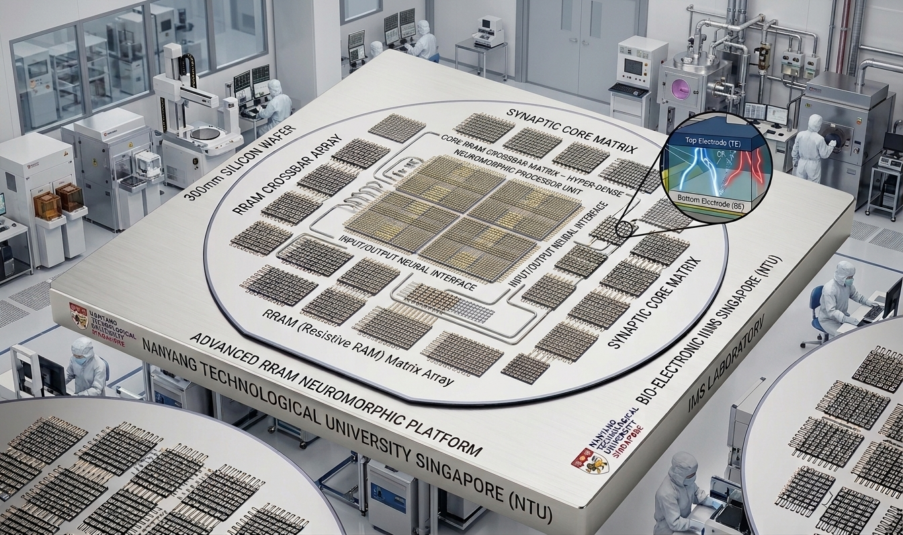
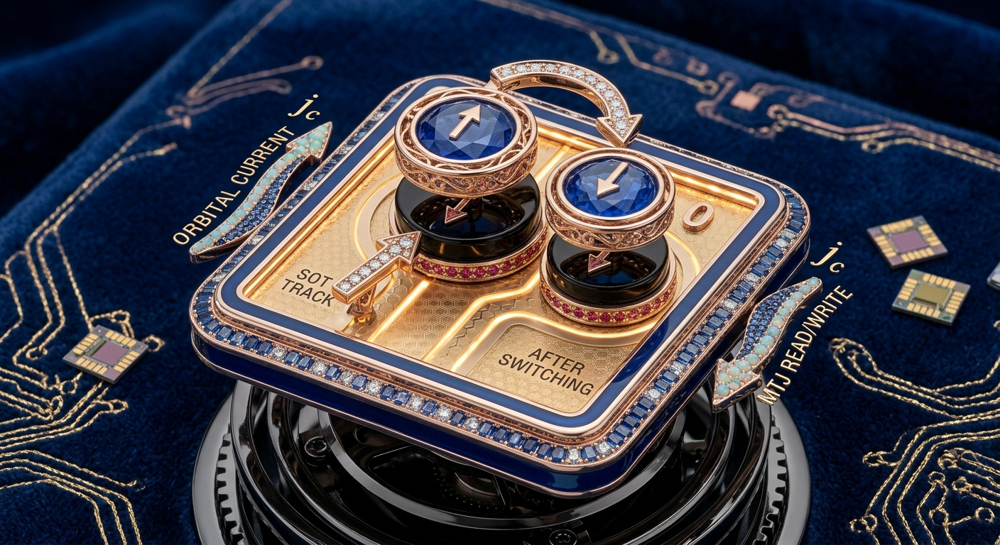
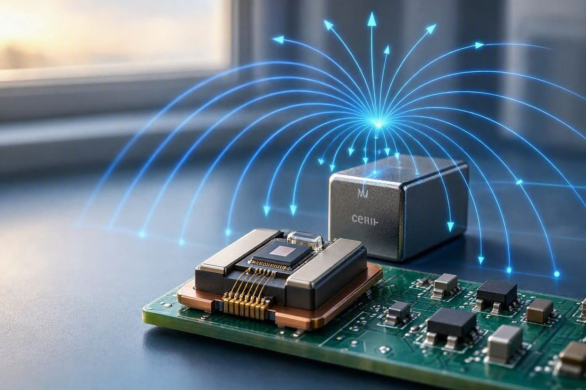
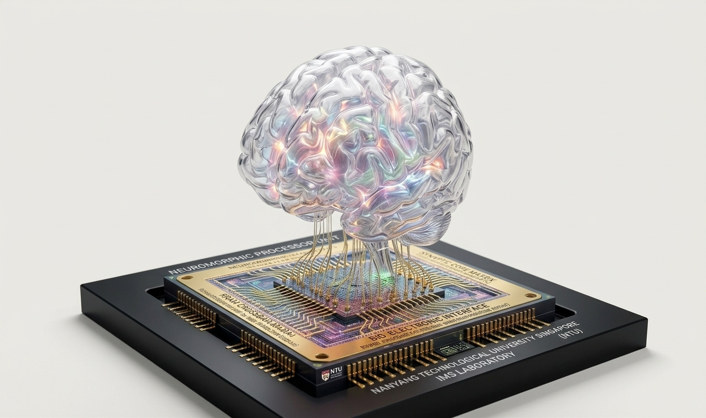
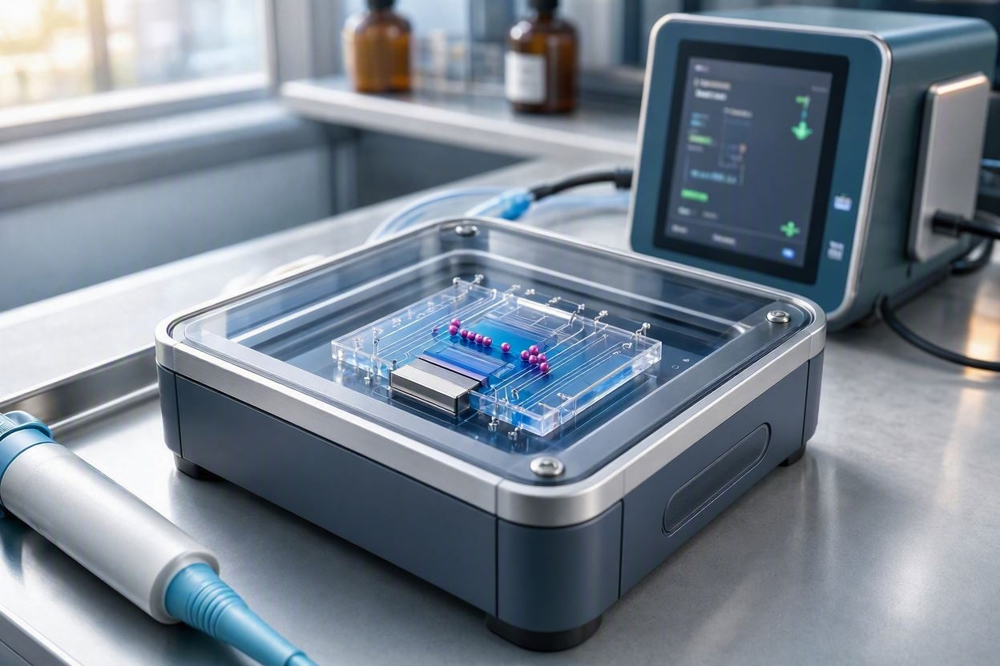
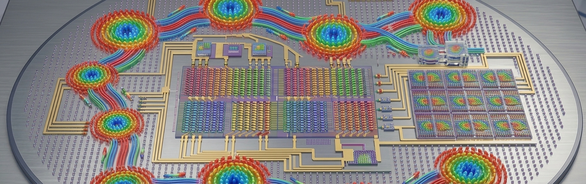

Research Focus Areas

Resistive Random Access Memory (RRAM)
Research on oxide-based resistive switching devices, endurance mechanisms, and memristive synapses for energy-efficient neuromorphic hardware.

Spin Orbit Torque (SOT) And Orbit Torque
Probing spin-orbit torque phenomena, field-free switching, and interfacial spin dynamics in ultrathin ferromagnetic/heavy-metal heterostructures.

Magnetoresistive Sensors
Development of ultra-sensitive Tunnel Magnetoresistance (TMR) and Giant Magnetoresistance (GMR) sensors for industrial and biomedical applications.

Neuromorphic Computing
Bridges the gap between biological efficiency and digital hardware by developing event-driven algorithms and intelligent systems capable of learning from real-world data in real time.

Magneto-Fluidics And Nanoparticles
Integration of magnetic forces with microfluidic systems for biological cell separation, magnetic characterisation, and functionalisation of nanostructured magnetic materials for hyperthermia and bio-tagging applications.

Skyrmions Dynamics
Exploring room-temperature creation, manipulation, and current-driven motion of nanoscale topological spin structures for ultra-low power memory.